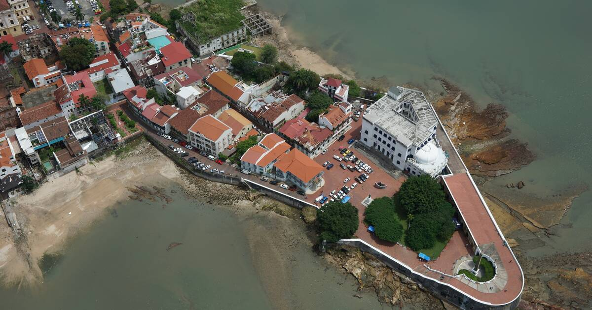

Panama was originally inhabited by the Native American tribes of the Coclé and Cuevas peoples. The first European to visit Panama was Rodrigo de Bastida in 1501. A year later, Christopher Columbus arrived and established the city of Darien.
In 1513 Vasco de Balboa made his famous trek from the Atlantic Ocean to the Pacific across the Isthmus of Panama.  This trip proved that the crossing could be made and turned Panama in to a major trading center.
For years silver and gold were shipped in from other areas in the New World, carried across Panama, and then put on ships bound for Spain. The trip was dangerous and the road across Panama gained the nickname the Camino de Cruces or Road of the Crosses due to all the people who died along the way
For nearly 300 years Panama was a colony of the Spanish Empire. In 1821 Panama left the Spanish Empire and became a part of Colombia. Over the years Panama tried to leave Colombia but was unable to. In 1903 Panama finally declared independence and signed a treaty with the United States. The treaty stated that the United States would have rights to a zone 10 miles wide and 50 miles long where it would build a canal to be used to cross Panama. In 1914 the United States completed the Panama Canal. In 1999 the canal was passed into the hands of the Panamanian government.